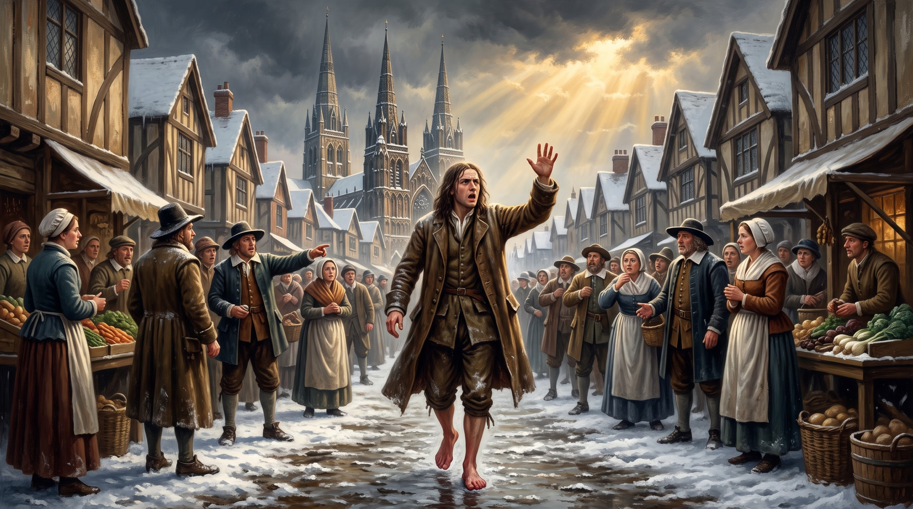

George Fox, a Obediência sem Sapatos na Neve e o Confronto com o Sangue dos Mártires

No inverno de 1651, recém-liberto da terrível prisão de Derby, onde passara meses encarcerado por sua recusa em pegar em armas e por sua pregação do Evangelho interior, George Fox (1624–1691) caminhava pelos campos de Staffordshire, na Inglaterra.
Ao se aproximar das torres da Catedral de Lichfield, Fox sentiu uma ordem divina avassaladora e inegociável queimando em seus ossos. Não havia explicação teológica racional imediata ou interesse pessoal; era a urgência pura da voz do Espírito Santo impondo-lhe um ato simbólico profético.
Registrado com rigor em seu famoso Journal (Diário), Fox descreve o momento em que a mão de Deus veio sobre ele com poder avassalador:
O Relato do Diário de George Fox:
Ao avistar as torres da igreja de Lichfield a cerca de três milhas de distância, o Senhor ordenou-lhe que tirasse os sapatos. Fox parou num campo onde havia pastores cuidando de ovelhas, entregou-lhes os seus sapatos e, no frio congelante do inverno, caminhou descalço sobre a lama e a neve em direção à cidade.
“Assim que entrei na cidade, a palavra do Senhor veio a mim de novo, dizendo: ‘Clama alto e não te detenhas!’. E enquanto eu andava pelas ruas do mercado e pelas praças, bradei com grande poder: ‘Ai da cidade sangrenta de Lichfield!’ (Woe to the bloody city of Lichfield!). Ninguém me tocou ou me fez mal, mas as pessoas ficaram pasmadas diante da presença de Deus.”
Em um primeiro momento, o próprio George Fox não entendeu totalmente por que Deus o enviara para declarar que Lichfield era uma "cidade sangrenta", pois a cidade parecia pacífica na época. Somente mais tarde, ao pesquisar a história da região, Fox descobriu a raiz espiritual do mandato:
Durante as grandes perseguições do imperador romano Diocleciano (aproximadamente no ano 303 d.C.), milhares de cristãos britânicos foram massacrados naquele mesmo local. O próprio nome Lichfield deriva da tradição saxônica que significa "O Campo dos Mortos". O sangue inocente dos mártires cristãos havia sido derramado ali séculos antes sem o devido arrependimento coletivo, e a religiosidade formal da Inglaterra do século XVII continuava cega para a realidade do martírio e da injustiça.
A entrada de George Fox em Lichfield estabelece uma conexão direta com a missão profética de **Jonas em Nínive (Jonas 3:1-4)**:
No Antigo Testamento, a mensagem profética é frequentemente chamada de Fardo — o "peso" ou o "fardo" do Senhor (Jeremias 23:33; Naum 1:1). George Fox demonstrou que o verdadeiro avivamento não é um espetáculo planejado, mas a disposição do vaso humano em carregar o fardo de Deus, mesmo quando isso custa o ridículo social.
| Dimensão Profética | Jonas em Nínive (Antigo Testamento) | George Fox em Lichfield (1651) |
|---|---|---|
| A Ordem Divina | "Levanta-te, vai à grande cidade de Nínive e clama contra ela." | "Tira os sapatos e clama: Ai da cidade sangrenta de Lichfield." |
| O Estado Físico | Emergindo das profundezas do grande peixe. | Descalço sobre a neve e lama no rigor do inverno inglês. |
| A Mensagem central | "Ainda quarenta dias, e Nínive será subvertida." | "Woe to the bloody city of Lichfield!" (Ai da cidade sangrenta!). |
| A Causa Espiritual | A iniquidade e violência da cidade subiram perante Deus. | A memória do sangue dos mártires e a hipocrisia eclesiástica. |
O episódio de Lichfield marcou a consolidação do perfil profético do movimento Quaker. George Fox provou que o cristianismo autêntico exige obediência radical ao Espírito, custe o que custar à reputação pessoal.
Na **Parte 2**, analisaremos como essa mesma coragem espiritual se desdobrou na criação de uma comunidade viva: a vida dos Irmãos, o silêncio contemplativo, a igualdade radical e o apoio mútuo em meio a perseguições implacáveis.